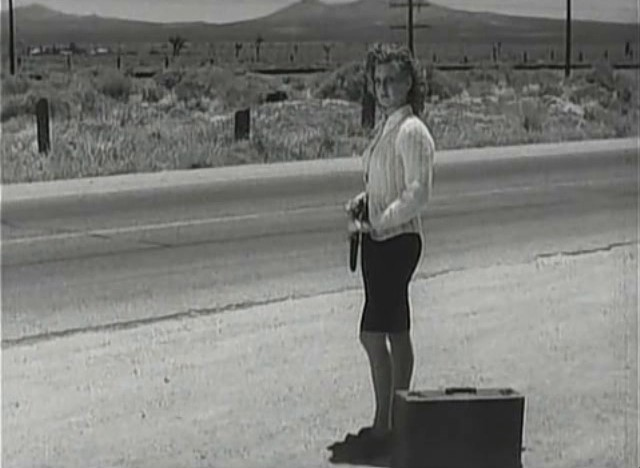

Detour, frame at 32:48
Edgar G. Ulmer · 1945 · Film, black and white (frame)
Free to use
Edgar G. Ulmer made the film for the Producers Releasing Corporation, one of Hollywood's Poverty Row studios. The shooting script lists fourteen camera days, from 14 to 29 June 1945, and Ann Savage recalled four more days on location in the desert at Lancaster, California. To keep the journey west moving right to left across the screen, Ulmer flipped the negative for some hitchhiking scenes, so cars appear to drive on the wrong side of the road.